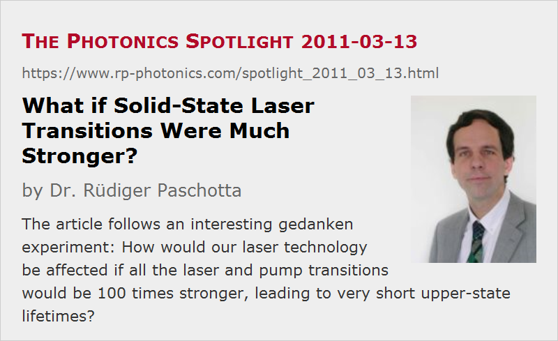

What if Solid-State Laser Transitions Were Much Stronger?
Posted on 2011-03-13 as a part of the Photonics Spotlight (available as e-mail newsletter!)
Permanent link: https://www.rp-photonics.com/spotlight_2011_03_13.html
Author: Dr. Rüdiger Paschotta, RP Photonics Consulting GmbH
Abstract: The article follows an interesting gedanken experiment: How would our laser technology be affected if all the laser and pump transitions would be 100 times stronger, leading to very short upper-state lifetimes?
Ref.: encyclopedia articles on solid-state lasers, laser transitions, forbidden transitions, upper-state lifetime

It is well known that the laser transitions in solid-state lasers (more precisely, doped-insulator lasers) are weakly allowed transitions, i.e., transitions with very low oscillator strengths. Essentially, these transitions would be forbidden transitions if the laser-active ions were totally isolated from their neighborhood, but the influences of the crystal lattice modify these transitions such that they have a small but non-zero oscillator strength. Typically, the oscillator strength is about 4 to 6 orders of magnitude lower than for the regular allowed transitions. This leads to long radiative upper-state lifetimes of microseconds to milliseconds, rather than a few nanoseconds, and consequently to the possibility of storing a lot of energy.
This article follows an interesting gedanken experiment: What if these symmetry-breaking effects, which increase the oscillator strength of the laser transitions, were 100 times stronger than they actually are? How would that affect our laser technology? Let us assume that other properties of the laser crystals would remain unchanged.
Transition Cross Sections and Upper-state Lifetime
First of all, all the transition cross sections (for lasing as well as for pump absorption) would be 100 times increased (assuming that the absorption and emission bandwidth of all transitions would remain unchanged). The rates of spontaneous emission from the upper laser levels would be 100 times higher, and this would result in 100 times smaller upper-state lifetimes. For example, that lifetime for Nd:YAG would go down from 230 μs to 2.3 μs.
Doping Concentration of Laser Crystal
Before considering the laser threshold, we should think about the appropriate doping concentration of the laser crystal. We would actually like to reduce that 100 times in order to obtain a reasonable level of pump absorption. Otherwise, the pump absorption would be much too high, so that the absorbed pump power would be very much concentrated on one edge for end pumping, or in a ring for side pumping. So we would be dealing with much lower quantities of laser-active ions in the laser.
A nice side effect would be that the frequent trouble with clustering of ions in highly doped laser crystals would be eliminated. For such small doping concentrations, it would be easy to smoothly distribute the ions. And the choice of host crystal materials would be greatly expanded: many would no longer be ruled out because of the difficulty to incorporate sufficiently high doping concentrations.
Laser Threshold
How would the laser threshold change? For now, we consider only continuous-wave operation.
In order to achieve the same laser gain as before, we need the same fractional excitation of laser-active ions, if we have the reduced the doping density as discussed above. Therefore, the number of excited ions is 100 times reduced. Although the spontaneous emission rate for each ion is 100 times increased, overall we get the same fluorescence power radiated away by spontaneous emission. From this we see that the pump power required to compensate the loss via spontaneous emission is not increased. And this holds not only for four-level transitions, but also for quasi-three-level laser transitions!
One might first expect trouble with quasi-three-level lasers, because in that case we need a high pump intensity to obtain a substantial upper-state population. Note, however, that the pump transition cross sections are also increased, so that the required pump intensity remains unchanged. So we just work with fewer ions, where each one participates much more intensively with the pumping and lasing process.
However, there is a serious caveat:
Efficiency of the Pumping Process and Depopulation of the Lower Laser Level
The above considerations on the laser threshold have implicitly assumed that the efficiency of the pump process is not affected by the strong pump and laser transitions. However, there is a problem. Often, the pumping process involves non-radiative transitions. Typically, one pumps to a level somewhat above the upper laser level, and relies on non-radiative processes to transfer the ions from there to the upper laser level. If the speed of these non-radiative processes is not increased as well, these might now become a bottleneck: we might lose a lot of energy by spontaneous emission from the upper pump level even before the ions get transferred to the upper laser level.
Similarly, the lower laser level must be depopulated quickly – particularly for a four-level laser. So here again could be a severe bottleneck.
For these reasons, the 100 times stronger transitions might indeed cause the laser threshold to go up a lot and also to reduce the slope efficiency, or even prevent any lasing on certain transitions. Note that the required non-radiative processes in our solid-state lasers are not always orders of magnitude faster than required for an efficient laser process!
Energy Storage and Q Switching
Obviously, the reduced upper-state lifetime would make it much harder to store any significant amount of energy in a laser crystal. Therefore, pulse generation by Q switching would become very difficult – at least with continuous pumping. Still, one could do pulsed pumping very shortly before the pulse emission, but the pump pulses would then have to be correspondingly shorter. It would be hard, for example, to do this with laser diodes.
Ultrashort Pulses via Mode Locking
The technique of mode locking might not be affected as much. Some details of the laser gain, in particular those related to energy storage, are much less important for mode locking. Although the gain saturation energy would be 100 times reduced, it would normally be still far above the pulse energy circulating in a mode-locked laser, so that gain saturation during a single pulse would still remain a quite insignificant process.
Relaxation Oscillations
Relaxation oscillations of lasers would first of all become 10 times faster due to the reduced gain saturation energy. In addition, they would be much more strongly damped. Essentially, this is because the involved stored energies in laser crystals would be much reduced, and the spontaneous emission rate per ion is higher. In effect, it would become much easier to get a stable output power from such a laser, and to further improve the stability with active means of stabilization.
Are there Such Lasers?
Surely, we cannot get hold of a piece of Nd:YAG with 100 times stronger pump and laser transitions. However, there are transition-metal-doped gain media which more or less have such properties: their oscillator strengths are high, and the upper-state lifetimes correspondingly low. For example, consider titanium–sapphire with an upper-state lifetime of about 3 μs only, i.e., about two orders of magnitude smaller than for Nd:YAG. Indeed, it is known that one cannot get high pulse energies with Q switching, whereas mode locking works very well here.
There is still a difference between transition-metal-doped gain media and the gedanken experiment made above. The oscillator strengths are high, but smeared out over larger wavelength ranges. Therefore, the transition cross sections are not that high. The down side of this is that the laser threshold becomes rather high; this would not be the case if the emission cross sections would be much higher but in a smaller range. However, we can profit from the huge emission bandwidth, both when building wavelength-tunable lasers and ultrafast lasers for few-femtosecond pulses.
This article is a posting of the Photonics Spotlight, authored by Dr. Rüdiger Paschotta. You may link to this page and cite it, because its location is permanent. See also the RP Photonics Encyclopedia.
Note that you can also receive the articles in the form of a newsletter or with an RSS feed.
Questions and Comments from Users
Here you can submit questions and comments. As far as they get accepted by the author, they will appear above this paragraph together with the author’s answer. The author will decide on acceptance based on certain criteria. Essentially, the issue must be of sufficiently broad interest.
Please do not enter personal data here; we would otherwise delete it soon. (See also our privacy declaration.) If you wish to receive personal feedback or consultancy from the author, please contact him e.g. via e-mail.
By submitting the information, you give your consent to the potential publication of your inputs on our website according to our rules. (If you later retract your consent, we will delete those inputs.) As your inputs are first reviewed by the author, they may be published with some delay.
|  |
If you like this page, please share the link with your friends and colleagues, e.g. via social media:
These sharing buttons are implemented in a privacy-friendly way!